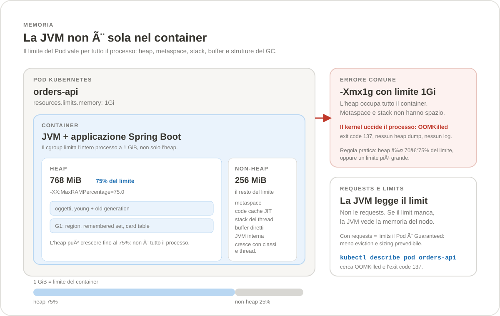
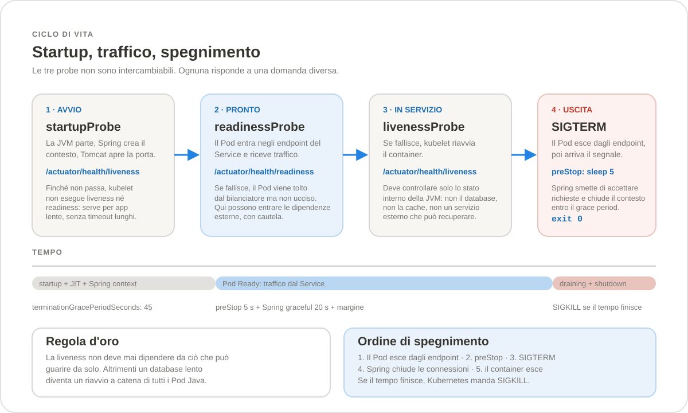

Sezione · Informatica
Java su Kubernetes
Portare una REST API Java o Spring Boot su Kubernetes non è solo “mettere il jar in un’immagine”. La JVM legge i limiti del container, dimensiona heap e garbage collector, parte con calma e va spenta senza tagliare le richieste in corso. Questa guida mette in fila le decisioni che contano: versione, memoria, GC, probe e diagnostica.
25 LTS come
scelta consigliata per le nuove applicazioni REST, con Java
21 LTS ancora ottimo e Java 17 LTS in
manutenzione. Java 27 (15 settembre 2026) è la
release più recente ma non è LTS. Lato framework:
Spring Boot 4.1.2 (22 ottobre 2026), compatibile da
Java 17 a Java 27. Contesto Kubernetes: versione 1.37, come nella
guida Kubernetes.
In evidenza
Il modello mentale in quattro numeri
Per una REST API Spring Boot di dimensioni normali, il punto di partenza ragionevole è: 1–2 CPU e 1–2 GiB per Pod, heap al 70–75% del limite, requests uguali ai limits. Da lì si misura, non si indovina.
Perché Java su Kubernetes è diverso
Su una macchina virtuale la JVM è spesso l’unico inquilino: vede tutta la RAM, usa tutti i core e nessuno la uccide se il processo cresce. In un container le regole cambiano. Il kernel applica un limite di memoria al processo completo, non al solo heap. La CPU è una quota, non un numero di core fisici. Il file system può essere di sola lettura. Il Pod nasce, riceve traffico e muore molte volte, mentre la JVM vorrebbe scaldarsi con calma.
La JVM moderna sa leggere i limiti del container, ma solo se i
limiti esistono e se la versione è abbastanza recente. Da
lì in poi tutte le scelte si tengono: la percentuale di heap,
il garbage collector, il numero di thread, le probe e il tempo di
spegnimento. Un valore sbagliato non rompe la compilazione: si
manifesta in produzione come OOMKilled, latenza a
singhiozzo o un rollout che restituisce 503.
Questa guida parla di applicazioni REST: processi che restano in piedi, servono richieste brevi e devono rispondere con latenza prevedibile. I batch hanno esigenze diverse — throughput, checkpoint, esecuzioni lunghe — e meritano una trattazione separata.
Cosa cambia rispetto a una VM
| Aspetto | Macchina virtuale | Pod Kubernetes | Conseguenza per la JVM |
|---|---|---|---|
| Memoria | RAM della VM, spesso tutta disponibile | resources.limits.memory per container | L’heap deve lasciare spazio a metaspace, stack, code cache e buffer. |
| CPU | Core fisici o vCPU | Quota e periodo cgroup, con throttling | Il numero di processori effettivi cambia il parallelism del GC e dei pool. |
| Disco | Rootfs scrivibile e persistente | Layer immutabile, spesso read-only | Log su stdout, dump e file temporanei su un volume scrivibile. |
| Rete | IP e hostname stabili | IP del Pod effimero, DNS del Service | Le dipendenze si raggiungono per nome, non per indirizzo. |
| Vita | Mesi, con manutenzione pianificata | Rollout, eviction, riavvii | Startup e shutdown fanno parte del contratto, non sono casi limite. |
| Log | File locali, rotazione a cura del sistema | stdout/stderr raccolti dal runtime | Il GC log va su stdout, non in un file dentro il container. |
| Configurazione | File e variabili d’ambiente | ConfigMap, Secret, volumi | Le modifiche non sono sempre live: spesso serve un restart. |
Il confine è il cgroup
La JVM non legge “la memoria del Pod”: legge il limite
del cgroup a cui appartiene il processo. Se il limite c’è,
usa quello per calcolare l’heap massimo; se manca, vede la
memoria del nodo. Su un nodo da 64 GiB un container senza limiti
può ricevere una JVM che pianifica un heap enorme, e il
kernel la uccide alla prima crescita seria. Il flag
-XX:+UseContainerSupport è attivo per default
sulle versioni moderne: non va aggiunto, e soprattutto non va
disattivato.
Il default di -XX:MaxRAMPercentage è
25%. È un valore prudente per la JVM, ma
quasi mai quello che vuole un’applicazione Spring Boot, che
di solito può usare il 70–75% del limite lasciando il
resto al non-heap. La percentuale si applica al limite del cgroup,
non alle requests: le requests servono a Kubernetes per schedulare
e a te per capire quanto margine hai, non alla JVM per dimensionarsi.

La trappola classica: heap uguale al limite
È l’errore più comune, ed è comprensibile:
si imposta -Xmx1g perché il Pod ha
limits.memory: 1Gi. Sembra coerente. In realtà
l’heap può arrivare a 1 GiB, ma il processo usa anche
tutto il resto: a un certo punto il kernel non ha più memoria
da dare e termina il container con SIGKILL. Kubernetes
lo mostra come OOMKilled, exit code
137. Non c’è heap dump, non c’è
un’eccezione Java, spesso non c’è nemmeno un log:
il processo non ha avuto il tempo di scriverlo.
# Da non fare: l'heap occupa tutto il container
resources:
limits:
memory: 1Gi
env:
- name: JAVA_TOOL_OPTIONS
value: "-Xmx1g"
# Meglio: percentuale sul limite, con margine per il non-heap
env:
- name: JAVA_TOOL_OPTIONS
value: "-XX:MaxRAMPercentage=70.0 -XX:+ExitOnOutOfMemoryError"
-XX:+ExitOnOutOfMemoryError non evita l’errore,
ma cambia il modo in cui lo si scopre: quando la JVM lancia un
OutOfMemoryError che lei stessa ha generato, esce con
codice 3 e lascia un messaggio
Terminating due to java.lang.OutOfMemoryError. È
molto meglio di un processo mezzo vivo che risponde 200 alle probe
e 500 alle richieste. Non copre però tutti i casi: un
esaurimento di memoria diretta o l’impossibilità di
creare un thread nativo possono non passare da quel percorso.
Quanto dare a un Pod Java
Non esiste un numero universale, ma esistono ordini di grandezza utili. Una REST API Spring Boot con Tomcat, Jackson, Hibernate e un pool JDBC ha bisogno di più memoria di un “hello world”. Sotto 1 GiB si entra nella zona in cui il non-heap mangia il margine e i sintomi diventano difficili da distinguere da un memory leak.
| Profilo | CPU (request = limit) | Memoria | Heap indicativo | Quando ha senso |
|---|---|---|---|---|
| Minimo di laboratorio | 500m | 512Mi | ~350Mi | Solo demo o servizi minuscoli, senza Hibernate e con pochi thread. |
| REST piccola | 1 | 1Gi | ~700Mi | Un’API con poche dipendenze, traffico modesto, 2–3 repliche. |
| REST standard | 2 | 2Gi | ~1.5Gi | Spring Boot con JPA, cache locale, pool JDBC e carichi variabili. |
| Servizio esigente | 4 | 4–8Gi | 3–6Gi | Molte classi, molti thread, payload grandi o latenza stretta. |
La CPU conta quanto la memoria. Con un limite di
500m la JVM vede meno di un core effettivo, il GC ha
pochi thread e lo startup si allunga. Un Pod Java con
1 CPU è accettabile per un servizio piccolo; per
un’applicazione Spring Boot completa, 2 CPU
rendono la vita più prevedibile. Se il limite CPU è
troppo basso, il container viene throttled e ogni picco di GC si
trasforma in latenza.
Mappa della guida
| Tab | Cosa risolve | Da leggere se… |
|---|---|---|
| Versioni e JVM | Java 8, 17, 21, 25 e 27; Spring Boot; immagini e vendor. | Devi scegliere la combinazione da mettere in produzione o migrare un’app esistente. |
| Memoria e GC | Heap, non-heap, G1, ZGC, virtual threads e flag di osservabilità. | Hai già un Pod e vuoi evitare OOMKilled o pause imprevedibili. |
| Kubernetes e Spring Boot | Dockerfile, Deployment, probe, graceful shutdown, sicurezza e scalabilità. | Devi scrivere o rivedere i manifest. |
| Comandi e diagnostica | Comandi JVM e kubectl, tabelle sintomo/causa, FAQ. | Qualcosa non funziona e serve una pista concreta. |
Come funziona il calendario Java
Dal 2017 Java segue un ritmo di due release all’anno, a marzo e a settembre. Ogni due anni una di queste release è LTS (Long-Term Support): Java 17 nel 2021, Java 21 nel 2023, Java 25 nel 2025. Le altre — 18, 19, 20, 22, 23, 24, 26, 27 — sono release non-LTS: utili per provare le novità, non la scelta predefinita per un servizio che deve restare in produzione per anni.
“LTS” non significa però “supportata per sempre da chiunque”. Ogni vendor — Oracle, Eclipse Adoptium, Amazon Corretto, BellSoft Liberica, Microsoft, Red Hat — ha la sua finestra di supporto e le sue condizioni. La versione LTS dice quando il progetto OpenJDK considera stabile una linea; il vendor dice fino a quando ricevi patch di sicurezza per il binario che stai usando.
Java 8, 17, 21, 25 e 27
| Versione | Uscita | Tipo | Container e cgroup | GC e novità | Spring Boot |
|---|---|---|---|---|---|
| Java 8 | 2014 | LTS legacy | Cgroup v2 solo da 8u372+; container support da 8u191+. | Default Serial o Parallel secondo l’ergonomia; G1 disponibile con -XX:+UseG1GC. Niente virtual threads, niente moduli. |
Solo 2.7.x; 2.7.18 è l’ultima e non riceve più patch OSS. |
| Java 11 | 2018 | LTS | Cgroup v2 da 11.0.16+. | G1 default; niente virtual threads. | Solo 2.7.x: Spring Boot 3 richiede Java 17. |
| Java 17 | 2021 | LTS | Cgroup v1 e v2 supportati. | G1 default; ZGC e Shenandoah disponibili; record e sealed class. | Baseline di Spring Boot 3.x e 4.x. |
| Java 21 | 2023 | LTS | Cgroup v1 e v2. | Virtual threads; ZGC generazionale opt-in; pattern matching for switch; sequenced collections. | Spring Boot 3.2+; ottimo con 3.5 e 4.x. |
| Java 25 | settembre 2025 | LTS, consigliata | Cgroup v1 e v2. | ZGC generazionale default; compact object headers opt-in; virtual thread pinning risolto da JDK 24 (JEP 491). | Spring Boot 3.5 e 4.x. |
| Java 26 | marzo 2026 | Non-LTS | Cgroup v1 e v2. | G1 ancora default; ZGenerational scade e non viene più riconosciuto. |
Spring Boot 4.0/4.1, ma non è una scelta da produzione. |
| Java 27 | 15 settembre 2026 | Non-LTS, ultima | Cgroup v1 e v2. | G1 default in tutti gli ambienti (JEP 523); compact object headers default (JEP 534); ZGC solo generazionale. | Spring Boot 4.1.2 dichiara supporto fino a Java 27. |
Due dettagli che cambiano il modo di configurare la JVM. Primo: su
Java 8 il garbage collector predefinito dipende dall’ergonomia
— Serial su macchine client-class,
Parallel su quelle server-class — e non
è G1; per una REST con heap piccolo e latenza richiesta
bisogna sceglierlo esplicitamente. Secondo: da Java 24 ZGC funziona solo in
modalità generazionale, e da Java 26 l’opzione
ZGenerational è scaduta. Su Java 21 invece va
aggiunta esplicitamente se si vuole la modalità generazionale.
Spring Boot compatibile
| Spring Boot | Java | Framework | Supporto OSS | Note |
|---|---|---|---|---|
| 2.7.18 | 8–21 | Spring Framework 5.3 | Terminato il 30 giugno 2023 | Ultima linea con Java 8. Solo per migrazioni, non per nuovi progetti. |
| 3.5.16 | 17–25 | Spring Framework 6.2 | Terminato il 30 giugno 2026 | Ultima linea 3.x; chi è fermo qui deve pianificare il passaggio a 4.x. |
| 4.0.9 | 17–25 | Spring Framework 7.0 | Fino al 31 dicembre 2026 | Jakarta EE 11, Servlet 6.1, Tomcat 11 o Jetty 12.1. Undertow non è supportato. |
| 4.1.2 | 17–27 | Spring Framework 7.0 | Fino al 31 luglio 2027 | Linea corrente (22 ottobre 2026). Spring Boot 4.2 è atteso il 19 novembre 2026. |
La matrice va letta in due direzioni. Spring Boot 4.1 richiede almeno Java 17 e arriva fino a Java 27: non obbliga a usare l’ultima release, ma dà il permesso di farlo. Le librerie di terze parti possono avere requisiti più stretti: la compatibilità del framework non è la compatibilità di tutto l’albero delle dipendenze. Prima di un salto di versione, controlla driver JDBC, agenti APM, Lombok, MapStruct, bytecode tool e plugin di build.
Quale combinazione scegliere
| Scenario | Scelta consigliata | Perché |
|---|---|---|
| Nuova REST API | Java 25 LTS + Spring Boot 4.1.x | LTS, supporto lungo, virtual threads maturi, ZGC generazionale e compact headers disponibili. |
| Applicazione già su Java 21 | Java 21 LTS + Spring Boot 4.1.x | Nessun salto obbligatorio: Java 21 è supportato. Aggiorna il framework, poi valuta Java 25 con calma. |
| Applicazione su Java 17 | Java 17 + Spring Boot 4.1.x, poi Java 21/25 | Funziona, ma Java 17 è la baseline: il guadagno maggiore arriva da virtual threads e GC più recenti. |
| Applicazione su Java 8 | Piano di migrazione a 17, poi 21/25 | Spring Boot 2.7 è fuori supporto OSS. Restare su Java 8 è un debito di sicurezza, non una scelta neutra. |
| Applicazione su Java 11 | Java 17 o 21 prima di Spring Boot 3 | Spring Boot 3 e 4 non supportano Java 11. La migrazione a 17 è il primo passo obbligato. |
| Valutazione di Java 27 | Solo in staging | Non è LTS. Spring Boot 4.1.2 lo supporta, ma la prossima LTS è Java 29. |
Se devi scegliere oggi e non hai vincoli particolari, la risposta breve è Java 25 + Spring Boot 4.1.x. Se hai un’applicazione che funziona su Java 21, non c’è fretta: aggiorna il framework, misura e programma il salto. Se sei su Java 8, il problema non è quale flag di GC usare: è quanto prima uscire da una linea senza patch.
Installare e verificare
La verifica viene prima dell’installazione: assicurati che il
binario che eseguirà in container sia quello giusto e che
JAVA_HOME non punti a una vecchia JDK. Su Windows,
Linux e macOS i comandi di controllo sono gli stessi.
java -version
javac -version
echo $JAVA_HOME
# Cosa vede la JVM: memoria, CPU, cgroup
java -XshowSettings:system -version
# Heap, GC e flag effettivi
java -XshowSettings:vm -version
Su JDK 17 e successivi -XshowSettings:system mostra il
provider cgroup, la memoria limite e la CPU effettiva. Su JDK 8 e 11
il flag può non essere disponibile: in quel caso usa
-XshowSettings:all -version e controlla comunque la
versione della patch, perché prima di 8u372/11.0.16 il cgroup v2
non viene riconosciuto.
Con SDKMAN! si installano più versioni senza toccare i pacchetti di sistema:
sdk list java
sdk install java 25.0.x-tem # sostituisci con l'ultima patch Temurin mostrata
sdk default java 25.0.x-tem
sdk list java | grep installed
Su Debian e Ubuntu il pacchetto dei repository ufficiali dipende
dalla release della distribuzione: per avere Java 25 su una LTS che
non lo include, usa il repository Adoptium o SDKMAN. Su RHEL e
derivate i pacchetti OpenJDK sono nella famiglia
java-21-openjdk; installa la variante
-headless sui server senza interfaccia grafica. Su
Windows, winget search EclipseAdoptium mostra i
pacchetti Temurin disponibili.
# RHEL / Fedora / Rocky (esempio con Java 21)
sudo dnf install java-21-openjdk-headless
# Debian / Ubuntu, dopo aver aggiunto il repository Adoptium
sudo apt install temurin-25-jdk
# Windows
winget search EclipseAdoptium
winget install EclipseAdoptium.Temurin.25.JDKImmagini container
In produzione serve un JRE, non un JDK: compiler,
jlink e strumenti di sviluppo occupano spazio e
superficie d’attacco. Le immagini Temurin sono un buon default
per la maggior parte dei casi; Corretto e Liberica sono alternative
valide; le distroless riducono ulteriormente il contenuto ma
tolgono anche la shell e alcuni strumenti di diagnostica.
| Immagine | Base | Quando usarla | Attenzione |
|---|---|---|---|
eclipse-temurin:25-jre | Ubuntu | Default per una REST Spring Boot. | Ha shell e strumenti: comoda per diagnosticare, meno minimale. |
eclipse-temurin:25-jre-alpine | Alpine / musl | Quando conta la dimensione. | Alcune librerie native e agenti possono richiedere glibc. |
eclipse-temurin:21-jre | Ubuntu | Applicazioni già su Java 21. | Nessun problema: è una LTS supportata. |
eclipse-temurin:17-jre | Ubuntu | Manutenzione di applicazioni esistenti. | Pianifica l’aggiornamento a 21 o 25. |
eclipse-temurin:8-jre | Ubuntu / Alpine | Solo eredità da migrare. | Verifica la patch: cgroup v2 richiede 8u372+. |
registry.access.redhat.com/ubi9/openjdk-21-runtime | UBI 9 | Ambienti Red Hat / OpenShift. | Ha script di avvio e default JVM propri; leggi la documentazione. |
| Distroless Java | Debian minimale | Massima riduzione della superficie. | Niente shell: usa kubectl debug e la variante debug. |
Fissa il tag a una versione precisa o, meglio, a un digest. Evita
latest: un rebuild non controllato può cambiare
JDK, patch di sicurezza e comportamento del GC nello stesso giorno.
Se l’immagine la costruisci tu, aggiungi un
RUN java -version in build: la versione finisce nei
log della pipeline e non devi indovinarla guardando il registry.
FROM eclipse-temurin:25-jre
WORKDIR /app
COPY build/libs/orders-api.jar app.jar
RUN java -version
USER 10001
EXPOSE 8080
ENTRYPOINT ["java", "-jar", "/app/app.jar"]Vendor, licenze e aggiornamenti
Tutti i vendor che distribuiscono OpenJDK condividono lo stesso codice di base, ma non lo stesso supporto. Oracle JDK richiede una licenza per l’uso commerciale in produzione; Oracle OpenJDK, Temurin, Corretto, Liberica e Microsoft Build of OpenJDK sono distribuzioni con licenza GPLv2 + Classpath Exception. Red Hat supporta le proprie build all’interno dell’abbonamento RHEL.
La regola pratica: scegli un vendor, verifica la sua finestra di supporto per la LTS che usi e aggiorna le patch con regolarità. Una Java 25.0.0 di settembre 2025 non è la stessa cosa di una 25.0.5 di ottobre 2026: tra le due ci sono correzioni di sicurezza e di stabilità. Non serve inseguire ogni release non-LTS; serve non restare fermi sulla patch iniziale di una LTS.
--release 21 e girare su Java 25, oppure compilare con
Java 25 e girare su Java 25. Non puoi far girare su Java 21 un jar
compilato per Java 25. In container la regola è: il runtime
deve essere almeno la versione del bytecode.
La JVM e il limite del container
La JVM calcola l’heap massimo a partire dalla memoria che
riesce a vedere. Se il container ha un limite cgroup, quel limite
è il numero che conta; se non c’è, la JVM usa la
memoria del nodo. Il flag che governa la percentuale è
-XX:MaxRAMPercentage, con default 25%
del limite. Un’applicazione Spring Boot che lascia il default
su un Pod da 1 GiB si ritrova con un heap massimo di circa 256 MiB:
spesso troppo poco, e il sintomo è un
OutOfMemoryError: Java heap space mentre nel container
ci sarebbe ancora spazio.
Al contrario, un heap troppo vicino al limite lascia scoperto il
non-heap e porta all’OOMKilled del kernel. La
zona utile è 70–75% del limite, con
una riserva del 25–30% per tutto il resto. Su 1 GiB conviene
stare intorno al 70%; su 2 GiB e oltre il 75% è spesso
ragionevole, perché la parte non-heap non cresce in proporzione
all’heap.
| Limite memoria | Heap al 70% | Heap al 75% | Riserva non-heap al 75% | Commento |
|---|---|---|---|---|
512Mi | ~358Mi | ~384Mi | ~128Mi | Zona stretta: solo servizi molto piccoli e pochi thread. |
1Gi | ~717Mi | ~768Mi | ~256Mi | Il 70% è più prudente con Spring Boot e JPA. |
2Gi | ~1.4Gi | ~1.5Gi | ~512Mi | Buon punto di partenza per una REST completa. |
4Gi | ~2.8Gi | ~3Gi | ~1Gi | Margine comodo per metaspace, thread e buffer. |
8Gi | ~5.6Gi | ~6Gi | ~2Gi | Solo se l’applicazione ha davvero bisogno di tanto heap. |
La percentuale non è l’unico modo. -Xmx
imposta un valore assoluto e ha la precedenza su
MaxRAMPercentage; -XX:MaxRAM cambia il
valore di memoria che la JVM considera disponibile. Il consiglio
è scegliere un meccanismo: o la percentuale, che si
adatta quando cambi il limite, o -Xmx, che è
prevedibile ma va aggiornato a mano. Mescolarli è il modo
più rapido per ottenere un heap diverso da quello che credi.
# Verifica il limite visto dalla JVM (dentro il container)
java -XshowSettings:system -version
# Output atteso, in sintesi:
# Provider: cgroupv2
# Effective CPU Count: 2
# Memory Limit: 1.00G
# Se compare la memoria del nodo, il limite non c'è o non viene letto.Quanto heap, quanta riserva
Il calcolo utile non è “heap = limite”, ma “heap = limite − tutto il resto”. Il tutto il resto non è una costante: dipende dal numero di classi caricate, dai thread, dai buffer diretti, dagli agenti e dal GC. Per questo la prima misura va fatta, non scelta. Un punto di partenza per una REST Spring Boot:
- 1 GiB:
-XX:MaxRAMPercentage=70.0, heap massimo intorno a 717 MiB. - 2 GiB:
-XX:MaxRAMPercentage=75.0, heap massimo intorno a 1.5 GiB. - 4 GiB e oltre:
75.0, ma controlla il non-heap reale prima di salire.
-XX:InitialRAMPercentage decide quanto heap viene
riservato all’avvio. Il default è basso; impostarlo al
50% riduce le crescite iniziali, ma non serve a garantire la
latenza. -XX:+AlwaysPreTouch tocca tutte le pagine
all’avvio: rende il consumo più prevedibile, ma allunga
lo startup e impegna subito la memoria. In Kubernetes, dove il Pod
nasce e muore spesso, raramente conviene.
heap usato + metaspace + code cache + stack committed +
buffer diretti + strutture del GC + JVM interna. Se l’RSS
si avvicina al limite mentre l’heap è al 60%, il
problema non è l’heap.
Cosa c’è oltre l’heap
| Area | Cosa contiene | Ordine di grandezza | Come cresce |
|---|---|---|---|
| Metaspace | Metadati delle classi, bytecode, costanti | 64–150 MiB per Spring Boot | Con le classi caricate; può arrivare a centinaia di MiB con molti jar. |
| Code cache | Codice macchina generato da JIT | 50–100 MiB | Con il riscaldamento; si stabilizza dopo i picchi iniziali. |
| Stack dei thread | Stack di ogni thread di piattaforma | ~1 MiB riservato per thread | Con il numero di thread; il commit reale dipende dalla profondità. |
| Buffer diretti | ByteBuffer.allocateDirect, Netty, TLS | Decine di MiB | Con payload grandi e connessioni; MaxDirectMemorySize può limitarli. |
| Strutture del GC | Remembered set, card table, mark bitmap | 5–10% dell’heap | Con la dimensione dell’heap e la sua frammentazione. |
| JVM interna | Thread interni, symbol table, code metadata, ZIP | Decine di MiB | Con classi, jar e thread. |
| Agenti e native | APM, profiler, librerie JNI | Variabile | Dipende dall’agente: va misurato, non ignorato. |
I thread meritano una nota. Un pool Tomcat da 200 thread con stack da 1 MiB riserva circa 200 MiB di spazio virtuale; non tutto diventa RSS, ma sotto carico una parte sì. Se aggiungi un pool JDBC, thread di scheduler, executor e agenti, il conto sale. Con i virtual threads la storia cambia: gli stack crescono nell’heap e il numero di thread di piattaforma resta basso.
Quale garbage collector
Per una REST API la domanda non è “qual è il GC migliore”, ma “quale compromesso tra pausa, throughput e CPU”. G1 è il default dalla JDK 9 nelle macchine server e va benissimo nella maggior parte dei casi. ZGC serve quando la latenza è il requisito dominante e c’è hardware da dedicargli. Parallel e Serial hanno senso in scenari diversi, non in una REST con latenza stretta.
| GC | Pause tipiche | Heap | CPU | Quando usarlo |
|---|---|---|---|---|
| Serial | Lunghe, stop-the-world | Molto piccolo | Minima | Container minuscoli, un solo core, servizi non critici. |
| Parallel | Lunghe, stop-the-world | Medio | Alta | Batch e throughput; non per REST con latenza. |
| G1 | ~200 ms (target) | 1–32 GiB | Media | Default consigliato per REST Spring Boot. |
| ZGC generazionale | < 1 ms | Grande, 16 GiB+ | Alta | Latenza stretta, heap grandi, CPU disponibile. |
| Shenandoah | Basse | Medio-grande | Media | Alternativa low-pause su build OpenJDK che lo includono. |
| Epsilon | Nessuna | Qualsiasi | Minima | Solo test di allocazione e benchmark; non raccoglie nulla. |
Il default cambia con la versione. Su Java 8 dipende
dall’ergonomia: Serial o Parallel, mai G1. Da Java 9 G1
è il default nelle macchine server; da Java 27 G1
è il default in tutti gli ambienti, anche quelli
piccoli (JEP 523). Serial resta disponibile con
-XX:+UseSerialGC, ma non è ciò che vuoi
per un’API che deve rispondere in pochi millisecondi.
G1 in pratica
G1 divide l’heap in region di dimensione uniforme, raccoglie
prima le region più “sporche” e mira a un tempo
di pausa configurabile. Il target predefinito è
200 ms (-XX:MaxGCPauseMillis=200).
Abbassarlo non è gratis: il collector fa più lavoro
per rispettarlo e può ridurre il throughput. Su una REST con
SLO di p99 a 300 ms, 200 ms di target è già un
obiettivo ambizioso; meglio misurare le pause reali prima di
toccarlo.
- Non impostare
-XX:G1HeapRegionSizesenza motivo: G1 lo sceglie in base all’heap. - Le allocazioni più grandi del 50% di una region sono humongous: evitare array enormi riduce il lavoro extra.
-XX:InitiatingHeapOccupancyPercent(default 45) decide quando parte il ciclo di marking; valori bassi anticipano il lavoro, valori alti rischiano full GC.-XX:+UseStringDeduplicationpuò ridurre la memoria se ci sono molte stringhe duplicate, ma consuma CPU.- Un full GC in G1 è un segnale: spesso l’heap è troppo piccolo o il carico è cambiato.
Se vedi pause molto più lunghe del target, non è automaticamente colpa del GC: può essere uno stop-the-world per altro (safepoint, deoptimization, dump, I/O) o una carenza di CPU. Il GC log dice quale pausa è stata e quanto è durata; senza quel dato si sta guardando il sintomo sbagliato.
ZGC e Shenandoah
ZGC è un collector a bassa latenza: le sue pause sono
dell’ordine del millisecondo anche con heap molto grandi. Il
prezzo è un maggiore consumo di CPU e di memoria nativa, e
una complessità che non sempre ripaga su un Pod da 1 GiB.
La modalità generazionale è disponibile come opt-in su
Java 21 (-XX:+UseZGC -XX:+ZGenerational), è
default da Java 23, è l’unica modalità da Java
24 e l’opzione ZGenerational scade su Java 26.
# Java 21: ZGC generazionale opt-in
-XX:+UseZGC -XX:+ZGenerational
# Java 23+: la modalità generazionale è il default di ZGC
-XX:+UseZGC
# Non aggiungere ZGenerational su Java 24+: è obsoleto e su 26 scade.ZGC ha senso quando hai un heap grande (tipicamente 16 GiB o più), un requisito di pausa molto stretto e CPU da dedicargli. Su un servizio con heap da 1–2 GiB e due core, G1 è quasi sempre la scelta migliore. Attenzione al budget: ZGC usa memoria nativa aggiuntiva, quindi la percentuale di heap va abbassata rispetto a G1 per non finire contro il limite del container.
Shenandoah è un altro collector low-pause, disponibile nelle
build OpenJDK che lo includono (non in Oracle JDK). Se usi Temurin,
Corretto o una build Red Hat, verifica che il collector sia
presente con java -XX:+PrintFlagsFinal -version | grep
UseShenandoahGC prima di adottarlo.
Virtual threads
Con Spring Boot 3.2+ può bastare una proprietà per far gestire le richieste da virtual threads:
spring:
threads:
virtual:
enabled: true
I virtual threads sono leggeri e si creano per richiesta: non vanno
messi in un pool. Il guadagno si vede con molte richieste
concorrenti che passano il tempo ad aspettare I/O — database,
HTTP, code. Su Java 21 un virtual thread che entra in un blocco
synchronized può restare “pinned” al
thread di piattaforma; Java 24 risolve gran parte di questo
problema (JEP 491). Se usi Java 21, controlla driver JDBC, client
HTTP e librerie che usano synchronized.
Il pool JDBC resta un limite reale: mille virtual thread non significano mille connessioni al database. Dimensiona HikariCP sul database, non sulla concorrenza delle richieste. Un valore tipico per una REST è 10–20 connessioni per replica, da verificare con il carico e con il limite del server.
I flag di partenza
Per Java 17, 21 e 25 il blocco seguente è un punto di
partenza ragionevole per una REST su un Pod da 1–2 GiB. Non
è una ricetta da copiare ovunque: MaxRAMPercentage
va scelto in base al limite, e il GC log su stdout va raccolto dal
sistema di logging.
JAVA_TOOL_OPTIONS="-XX:MaxRAMPercentage=70.0 \
-XX:InitialRAMPercentage=50.0 \
-XX:+ExitOnOutOfMemoryError \
-XX:+HeapDumpOnOutOfMemoryError \
-XX:HeapDumpPath=/tmp \
-Xlog:gc*:stdout:time,uptime,level,tags \
-XX:NativeMemoryTracking=summary"
JAVA_TOOL_OPTIONS viene letto automaticamente dalla
JVM, anche con java -jar. È comodo in
Kubernetes, ma stampa una riga Picked up
JAVA_TOOL_OPTIONS all’avvio: è normale.
JDK_JAVA_OPTIONS è un’alternativa da Java
9, con la stessa idea. Evita di costruire l’ENTRYPOINT
come java $JAVA_OPTS -jar: nella forma exec la shell
non espande la variabile.
Su Java 8 i flag sono diversi, perché la unified logging non esiste e il container support va verificato:
JAVA_TOOL_OPTIONS="-XX:+UseG1GC \
-XX:MaxGCPauseMillis=200 \
-XX:MaxRAMPercentage=70.0 \
-XX:+ExitOnOutOfMemoryError \
-XX:+HeapDumpOnOutOfMemoryError \
-XX:HeapDumpPath=/tmp \
-Xloggc:/tmp/gc.log \
-XX:+PrintGCDetails \
-XX:+PrintGCDateStamps \
-XX:+UseGCLogFileRotation \
-XX:NumberOfGCLogFiles=5 \
-XX:GCLogFileSize=10M"
Su Java 8 il GC log su file dentro il container va perso con il
Pod. Se ti serve davvero, monta un volume o usa un sidecar che
raccolga il file; in alternativa accetta di perdere il dettaglio e
usa le metriche. -XX:+UseContainerSupport è
attivo dalle 8u191, ma il cgroup v2 richiede 8u372+.
Osservare memoria e GC
| Strumento | Cosa mostra | Quando usarlo | Attenzione |
|---|---|---|---|
-Xlog:gc*:stdout | Pause, cause, tempi, occupancy | Sempre, in produzione. | Volume di log: parti da gc* e filtra se serve. |
-XX:NativeMemoryTracking=summary | Memoria nativa per categoria | Quando l’RSS supera l’heap. | Overhead (~5%); non lasciarlo se non serve. |
jcmd <pid> VM.native_memory summary | Dettaglio NMT | Confronto heap vs RSS. | NMT deve essere attivo all’avvio. |
jcmd <pid> GC.heap_info | Heap usato, committed, region | Per capire se l’heap è davvero pieno. | Richiede strumenti JDK nell’immagine. |
| JFR | Allocazioni, GC, thread, I/O | Incidenti e analisi di latenza. | File su volume o stream; overhead dipende dal profilo. |
| Micrometer / Actuator | jvm.memory.used, jvm.gc.pause, http.server.requests | Dashboard e alert. | Le metriche JVM non sostituiscono il GC log. |
kubectl top pod | RSS e CPU del Pod | Prima occhiata a un Pod sospetto. | Richiede metrics-server; non mostra il dettaglio JVM. |
Un metodo semplice: prendi un Pod sotto carico rappresentativo,
guarda jvm.memory.used e il GC log per l’heap,
poi confronta con il RSS di kubectl top pod. Se la
differenza è stabile e sotto il 25–30% del limite, la
configurazione è sana. Se il RSS cresce nel tempo mentre
l’heap dopo il GC torna basso, il sospetto è una
perdita nativa o un agente; se l’heap dopo il GC resta alto,
è una perdita di oggetti o un carico che non lascia respiro.
/tmp occupa spazio nel container e può
far scattare il limite di memoria o riempire il disco effimero.
Monta un volume con spazio sufficiente, oppure accetta il rischio
consapevolmente e tieni il dump piccolo.
Dall’artefatto all’immagine
Spring Boot produce un jar eseguibile che contiene l’applicazione e le dipendenze. Per Kubernetes serve un’immagine piccola, non-root e con i layer ordinati in modo che un cambio di codice non riscarichi tutte le librerie. Il modo più semplice è estrarre i layer del jar con il supporto integrato di Spring Boot.
# Prima stage: estrae i layer dal jar
FROM eclipse-temurin:25-jre AS builder
WORKDIR /app
COPY build/libs/orders-api.jar app.jar
RUN java -Djarmode=tools -jar app.jar extract --layers --destination extracted
# Seconda stage: immagine finale, senza JDK e senza build tools
FROM eclipse-temurin:25-jre
WORKDIR /app
COPY --from=builder --chown=10001:10001 /app/extracted/dependencies/ ./
COPY --from=builder --chown=10001:10001 /app/extracted/spring-boot-loader/ ./
COPY --from=builder --chown=10001:10001 /app/extracted/snapshot-dependencies/ ./
COPY --from=builder --chown=10001:10001 /app/extracted/application/ ./
USER 10001
EXPOSE 8080
ENTRYPOINT ["java", "-jar", "app.jar"]
jarmode=tools è disponibile da Spring Boot 3.3;
con versioni precedenti si usa layertools. I nomi dei
layer — dependencies,
spring-boot-loader, snapshot-dependencies,
application — sono quelli generati dal plugin.
Se il progetto usa Gradle, il jar si trova in
build/libs/; con Maven in target/.
COPY . . porta con sé .git,
target/, test e segreti locali. Copia solo il jar
costruito dalla pipeline, oppure usa un .dockerignore
esplicito.
Un Deployment completo
Questo manifest è un punto di partenza per una REST su un Pod da 2 GiB e 2 CPU. Le richieste e i limiti sono uguali: il Pod ottiene la classe Guaranteed, il che lo rende meno esposto alle eviction per pressione di memoria. Le sonde usano gli endpoint di Spring Boot Actuator, non una pagina generica.
apiVersion: apps/v1
kind: Deployment
metadata:
name: orders-api
labels:
app: orders-api
spec:
replicas: 3
strategy:
type: RollingUpdate
rollingUpdate:
maxUnavailable: 0
maxSurge: 1
selector:
matchLabels:
app: orders-api
template:
metadata:
labels:
app: orders-api
spec:
terminationGracePeriodSeconds: 45
automountServiceAccountToken: false
securityContext:
runAsNonRoot: true
runAsUser: 10001
fsGroup: 10001
seccompProfile:
type: RuntimeDefault
containers:
- name: app
image: registry.example.com/orders-api:1.0.0
imagePullPolicy: IfNotPresent
ports:
- name: http
containerPort: 8080
env:
- name: JAVA_TOOL_OPTIONS
value: >-
-XX:MaxRAMPercentage=75.0
-XX:InitialRAMPercentage=50.0
-XX:+ExitOnOutOfMemoryError
-XX:+HeapDumpOnOutOfMemoryError
-XX:HeapDumpPath=/tmp
-Xlog:gc*:stdout:time,uptime,level,tags
-Djava.io.tmpdir=/tmp
- name: SPRING_PROFILES_ACTIVE
value: kubernetes
resources:
requests:
cpu: "2"
memory: "2Gi"
limits:
cpu: "2"
memory: "2Gi"
startupProbe:
httpGet:
path: /actuator/health/liveness
port: http
periodSeconds: 5
timeoutSeconds: 3
failureThreshold: 30
readinessProbe:
httpGet:
path: /actuator/health/readiness
port: http
periodSeconds: 5
timeoutSeconds: 3
failureThreshold: 3
livenessProbe:
httpGet:
path: /actuator/health/liveness
port: http
periodSeconds: 10
timeoutSeconds: 3
failureThreshold: 3
lifecycle:
preStop:
exec:
command: ["sh", "-c", "sleep 5"]
securityContext:
allowPrivilegeEscalation: false
readOnlyRootFilesystem: true
capabilities:
drop: ["ALL"]
volumeMounts:
- name: tmp
mountPath: /tmp
volumes:
- name: tmp
emptyDir:
sizeLimit: 2Gi
Il valore failureThreshold: 30 con
periodSeconds: 5 dà alla startupProbe un budget
di 150 secondi. È un margine sano per una
JVM che parte a freddo su 2 CPU; se l’applicazione impiega di
più, aumenta il budget invece di allungare la liveness. La
liveness non deve diventare un timer di startup mascherato.
Startup, readiness e liveness
| Probe | Domanda | Endpoint | Se fallisce | Consiglio |
|---|---|---|---|---|
| startupProbe | La JVM e Spring hanno finito di partire? | /actuator/health/liveness | kubelet riavvia il container dopo il budget. | Solo per lo startup; budget generoso, poi si disattiva da sola. |
| readinessProbe | Il Pod può ricevere traffico? | /actuator/health/readiness | Il Pod esce dagli endpoint del Service, ma non viene ucciso. | Può includere dipendenze esterne, con cautela. |
| livenessProbe | La JVM è ancora viva e in grado di progredire? | /actuator/health/liveness | kubelet riavvia il container. | Non controllare database, cache o servizi esterni. |
Spring Boot espone due gruppi separati. Il gruppo
liveness contiene livenessState; il gruppo
readiness contiene readinessState. Su
Kubernetes i probe sono abilitati automaticamente; fuori da
Kubernetes servono le proprietà
management.endpoint.health.probes.enabled=true. Se
aggiungi il database al gruppo readiness, ricorda che un database
lento fa uscire tutti i Pod dal Service: è una
scelta legittima per un servizio che non può funzionare
senza DB, ma va presa consapevolmente.
# Solo se vuoi che la readiness dipenda anche dal database
management:
endpoint:
health:
group:
readiness:
include: readinessState,db
I timeout contano. Il default di timeoutSeconds
è 1 secondo: durante una pausa di GC o un picco di CPU,
un’API che risponde in 1,2 secondi viene dichiarata morta.
Tre secondi sono un compromesso ragionevole per una REST; per
servizi con elaborate risposte lente, aumenta il timeout della
readiness e non quello della liveness.
Configurazione Spring Boot
Queste proprietà coprono il minimo per convivere con
Kubernetes: spegnimento ordinato, directory temporanea scrivibile,
probe e metriche. /tmp è montato come
emptyDir, quindi Tomcat può scrivere la sua
work directory anche con il root file system in sola lettura.
server:
port: 8080
shutdown: graceful
tomcat:
basedir: /tmp/tomcat
spring:
application:
name: orders-api
lifecycle:
timeout-per-shutdown-phase: 20s
threads:
virtual:
enabled: true
datasource:
hikari:
maximum-pool-size: 15
minimum-idle: 5
management:
endpoints:
web:
exposure:
include: health,info,metrics,prometheus
endpoint:
health:
probes:
enabled: true
show-details: never
health:
livenessstate:
enabled: true
readinessstate:
enabled: true
show-details: never evita di esporre dettagli su
database e filesystem a chi raggiunge l’endpoint. Se usi
Prometheus, aggiungi la dipendenza
micrometer-registry-prometheus e esponi
/actuator/prometheus solo sulla rete interna. Le
metriche JVM più utili sono jvm.memory.used,
jvm.memory.max, jvm.gc.pause,
process.cpu.usage e http.server.requests.
Per la configurazione esterna, meglio i file montati da ConfigMap e
Secret che le variabili d’ambiente: un file si può
leggere con spring.config.import, non finisce in
ps e si può versionare. Le variabili restano
comode per i flag JVM e per i valori non segreti.
spring:
config:
import: optional:configtree:/etc/orders-api/
# Nel Pod:
# volumeMounts:
# - name: config
# mountPath: /etc/orders-api
# readOnly: trueSpegnimento senza errori
Un rollout che sembra funzionare può comunque produrre 502 e
503: il Pod viene rimosso dagli endpoint e riceve
SIGTERM quasi nello stesso momento, ma i due eventi
non sono istantanei e non hanno un ordine garantito. Se la JVM
smette di ascoltare prima che kube-proxy e l’ingress abbiano
aggiornato le regole, per qualche secondo le richieste continuano
ad arrivare a un processo che non risponde.
- Kubernetes avvia la rimozione del Pod dagli endpoint del Service.
- kubelet esegue il
preStop(sleep 5) e solo al termine inviaSIGTERM. - Spring Boot mette la readiness in
OUT_OF_SERVICEe smette di accettare nuove richieste. - Le richieste in corso vengono completate entro
timeout-per-shutdown-phase. - Il contesto si chiude, i pool vengono rilasciati, il processo esce con 0.
- Se il tempo complessivo supera
terminationGracePeriodSeconds, arrivaSIGKILL.
La somma deve stare nel grace period:
preStop + shutdown + margine < terminationGracePeriodSeconds.
Con 5 + 20 + 20 = 45 secondi il conto torna. Se hai richieste lunghe
o code, aumenta il grace period e il timeout di Spring; non ridurre
il preStop a zero solo perché “tanto il readiness basta”.

Risorse, QoS e scalabilità
Kubernetes assegna una classe di qualità del servizio in base
a requests e limits. Con requests uguali ai limits per CPU e
memoria, il Pod è Guaranteed; con valori
diversi è Burstable; senza nessun valore
è BestEffort. In caso di pressione sul
nodo, i Pod Guaranteed sono gli ultimi a essere sfrattati, ma non
sono immuni: un limite di memoria superato porta comunque a
OOMKilled.
| Classe | Requests / limits | Comportamento | Uso consigliato |
|---|---|---|---|
| Guaranteed | Uguali per CPU e memoria | Massima prevedibilità; eviction più tardiva. | Default per una REST Java in produzione. |
| Burstable | Requests minori dei limits | Può usare più CPU, ma è soggetto a throttling e a eviction. | Solo se il carico è davvero a burst e accetti il rischio. |
| BestEffort | Nessun valore | Prima vittima della pressione; la JVM vede il nodo. | Da evitare per Java in produzione. |
La CPU è una quota, non un numero di core. Con
limits.cpu: 2 la JVM vede due processori effettivi e
dimensiona i thread del GC di conseguenza. Se il limite è
troppo basso, il throttling colpisce anche il GC e le pause
percepite crescono. Se non metti il limite CPU, la JVM vede tutti i
core del nodo e può generare più thread del dovuto:
meglio un limite esplicito, o -XX:ActiveProcessorCount
se la JVM sbaglia a leggere la quota.
L’autoscaling basato sulla CPU è il più semplice e spesso sufficiente. Quello basato sulla memoria è meno affidabile per Java: l’heap cresce e non si restringe subito dopo un picco, quindi il Pod sembra “pieno” anche quando non lo è. Se ti serve scalare su latenza o code, usa metriche applicative.
apiVersion: v1
kind: Service
metadata:
name: orders-api
spec:
selector:
app: orders-api
ports:
- name: http
port: 80
targetPort: http
---
apiVersion: policy/v1
kind: PodDisruptionBudget
metadata:
name: orders-api
spec:
minAvailable: 2
selector:
matchLabels:
app: orders-api
---
apiVersion: autoscaling/v2
kind: HorizontalPodAutoscaler
metadata:
name: orders-api
spec:
scaleTargetRef:
apiVersion: apps/v1
kind: Deployment
name: orders-api
minReplicas: 3
maxReplicas: 12
metrics:
- type: Resource
resource:
name: cpu
target:
type: Utilization
averageUtilization: 70
behavior:
scaleDown:
stabilizationWindowSeconds: 300
Con maxUnavailable: 0 e maxSurge: 1 il
rollout aggiunge un Pod alla volta e non toglie capacità prima che
il nuovo sia pronto. Il PodDisruptionBudget protegge dai drenaggi
volontari (manutenzione, upgrade del nodo), non dai crash. Con tre
repliche e minAvailable: 2 si
perde al massimo una replica alla volta.
Sicurezza del container
Un’immagine Java non ha bisogno di root, di capability o di
un file system scrivibile. Il manifest qui sopra applica le
impostazioni di base: utente non-root, nessuna escalation di
privilegi, root file system in sola lettura, tutte le capability
rimosse, profilo seccomp predefinito. Sono valori che riducono la
superficie senza cambiare il funzionamento dell’applicazione,
a patto di montare /tmp e di non scrivere altrove.
- Utente non-root:
runAsUser: 10001eUSER 10001nell’immagine. - Root file system:
readOnlyRootFilesystem: true; usaemptyDirper/tmp. - Capability:
drop: ["ALL"]; non servono a una JVM che ascolta su una porta alta. - Seccomp:
RuntimeDefault; non disattivarlo senza una ragione precisa. - Service account:
automountServiceAccountToken: falsese l’app non parla con l’API Kubernetes. - Immagine: pin a digest, scansione vulnerability, SBOM, base image aggiornata.
- Secret: montati come file, non passati in variabili d’ambiente o in
JAVA_TOOL_OPTIONS.
Se usi un agente APM o un exporter che richiede accesso a
/proc, a socket o a file di sistema, aggiungi solo
ciò che serve e documenta l’eccezione. Le eccezioni
silenziose sono il modo più comune per annullare questi
default.
Build, registry e native image
| Approccio | Comando | Vantaggi | Limiti |
|---|---|---|---|
| Dockerfile multi-stage | docker build -t ... | Controllo completo di layer, utente e base image. | Va mantenuto; richiede un daemon o Buildah. |
| Buildpacks | ./mvnw spring-boot:build-image | Base image e memory calculator gestiti; niente Dockerfile. | Meno controllo sul contenuto; dipende dal builder. |
| Jib | ./mvnw compile jib:build | Reproducibile, senza daemon, layer ottimizzati. | Richiede il plugin; base image da scegliere. |
| Native image | ./mvnw -Pnative native:compile | Startup molto rapido, memoria più bassa. | Build lenta, riflessione e agenti da configurare; non per tutti i casi. |
I buildpack Paketo usano un memory calculator che
dimensiona l’heap in base al limite del container: è
comodo, ma i valori vanno verificati, perché il calcolo non conosce
il tuo carico. Le immagini Red Hat con run-java.sh
possono impostare l’heap all’80% del limite: è
un default più aggressivo del 70–75% consigliato qui,
quindi controlla prima di fidarti.
La native image è interessante per scale-to-zero, funzioni e servizi con startup frequente. Per una REST che resta accesa, il guadagno di memoria non sempre giustifica la complessità di build e di diagnostica. Se la provi, usa GraalVM 25 o successivo, come richiesto da Spring Boot 4.1.
Checklist prima della produzione
- JDK LTS supportato dal vendor, con patch recente; Spring Boot in una linea con supporto OSS.
limits.memoryimpostato; heap al 70–75% e non uguale al limite.requestsuguali ailimitsper CPU e memoria (Guaranteed).- CPU sufficiente per startup e GC; niente limiti da
500msu Spring Boot completo. startupProbecon budget misurato, non con un timeout arbitrario.readinessProbeseparata dallalivenessProbe; la liveness non controlla il database.server.shutdown=graceful,preStope grace period coerenti.maxUnavailable: 0, PDB e almeno due repliche per i servizi critici.- Root file system read-only,
/tmpsuemptyDir, utente non-root. - GC log su stdout, metriche Actuator, NMT attivabile per diagnosi.
ExitOnOutOfMemoryErrore heap dump con spazio sufficiente.- Rollout provato davvero: osserva 502/503, restart e tempi di startup durante un deploy.
kubectl get pods -w, i log del GC e la latenza
all’ingress. Se il deploy è pulito, i flag sono
coerenti; se compaiono 503, il problema è nella sequenza di
spegnimento o nelle probe, non nell’heap.
Digita per filtrare le tabelle e i comandi qui sotto.
Comandi JVM nel container
Molti comandi funzionano solo se l’immagine contiene gli
strumenti del JDK. Con un JRE minimale o distroless, jcmd
e jstat possono mancare: in quel caso si usa
kubectl debug con un’immagine di diagnostica,
oppure si accetta di lavorare solo con log e metriche. Il PID 1
dentro il container è la JVM: nei comandi sotto va indicato
come 1, non come il PID visto sull’host.
| Comando | Cosa fa | Note |
|---|---|---|
java -XshowSettings:system -version | Mostra cgroup, CPU e memoria visti dalla JVM | Su JDK 8/11 può servire -XshowSettings:all. |
java -XshowSettings:vm -version | Heap massimo e iniziale, GC scelto | Il primo controllo quando un flag sembra ignorato. |
jcmd 1 VM.flags | Flag JVM effettivi | Conferma cosa è arrivato da JAVA_TOOL_OPTIONS. |
jcmd 1 GC.heap_info | Heap usato, committed e region | Distingue “heap pieno” da “RSS alto”. |
jcmd 1 VM.native_memory summary | Memoria nativa per categoria | Richiede -XX:NativeMemoryTracking=summary all’avvio. |
jcmd 1 Thread.print | Thread dump | Utile per blocchi, pool esauriti e virtual thread pinned. |
jcmd 1 JFR.start duration=60s filename=/tmp/app.jfr | Registrazione JFR di 60 secondi | Scrivi su un volume se il file deve sopravvivere al Pod. |
jstat -gcutil 1 1000 | Occupazione e pause GC ogni secondo | Richiede jstat nell’immagine. |
jmap -histo:live 1 | head -40 | Classi che occupano più heap | Il comando può causare una pausa: non in produzione senza motivo. |
kill -3 1 | Thread dump su stdout | Funziona anche senza strumenti JDK, se il processo è HotSpot. |
# Esempio: capire dove è finita la memoria
kubectl exec deploy/orders-api -- jcmd 1 VM.native_memory summary
kubectl exec deploy/orders-api -- jcmd 1 GC.heap_info
kubectl top pod -l app=orders-api
# Thread dump senza jcmd
kubectl exec deploy/orders-api -- kill -3 1
kubectl logs deploy/orders-api --tail=200Comandi Kubernetes
| Comando | Cosa fa | Note |
|---|---|---|
kubectl get pods -l app=orders-api -o wide | Stato, restart e nodo dei Pod | Guarda RESTARTS e STATUS. |
kubectl describe pod <pod> | Eventi, probe, ultimo stato del container | Cerca OOMKilled, exitCode e Last State. |
kubectl logs <pod> --tail=200 | Log applicativi e GC | Il GC log su stdout finisce qui. |
kubectl logs <pod> --previous | Log del container precedente | Fondamentale dopo un crash o un OOMKilled. |
kubectl get events --sort-by=.lastTimestamp | Eventi del namespace in ordine | Mostra eviction, probe fallite, image pull. |
kubectl top pod <pod> | CPU e memoria reali | Richiede metrics-server; utile per il confronto heap/RSS. |
kubectl rollout status deploy/orders-api | Avanzamento del rollout | Si blocca se un Pod non diventa pronto. |
kubectl rollout undo deploy/orders-api | Torna alla revisione precedente | Non risolve un problema di configurazione già distribuito. |
kubectl rollout restart deploy/orders-api | Riavvia i Pod in modo controllato | Utile dopo un cambio di ConfigMap o Secret. |
kubectl port-forward svc/orders-api 8080:80 | Espone il Service in locale | Per provare Actuator senza ingress. |
kubectl debug -it <pod> --image=busybox --target=app | Container effimero nel namespace del Pod | Condivide il process namespace con il container target. |
kubectl exec -it deploy/orders-api -- sh | Shell nel container | Non funziona con distroless: usa kubectl debug. |
Actuator e metriche
| Comando | Cosa mostra | Note |
|---|---|---|
curl -s localhost:8080/actuator/health | Stato complessivo | Con show-details: never non espone i dettagli. |
curl -s localhost:8080/actuator/health/liveness | Stato usato dalla livenessProbe | Deve dipendere solo dallo stato interno. |
curl -s localhost:8080/actuator/health/readiness | Stato usato dalla readinessProbe | OUT_OF_SERVICE durante lo shutdown. |
curl -s localhost:8080/actuator/metrics/jvm.memory.used | Memoria JVM per area | Confronta heap, non-heap e totale. |
curl -s localhost:8080/actuator/metrics/jvm.gc.pause | Pause del GC | Utile per correlare latenza e GC. |
curl -s localhost:8080/actuator/metrics/http.server.requests | Richieste HTTP per stato e URI | Verifica 5xx e latenza percepita. |
curl -s localhost:8080/actuator/prometheus | Metriche in formato Prometheus | Richiede il registry Micrometer e l’esposizione dell’endpoint. |
Sintomo, causa, rimedio
| Sintomo | Causa probabile | Verifica | Rimedio |
|---|---|---|---|
OOMKilled, exit 137 |
Heap troppo vicino al limite o crescita nativa. | kubectl describe pod; confronta heap e RSS con NMT. |
Abbassa MaxRAMPercentage a 65–70%, aumenta il limite o riduci thread e buffer. |
Exit 3 con Terminating due to OutOfMemoryError |
ExitOnOutOfMemoryError ha fermato la JVM. |
kubectl logs --previous; cerca il tipo di OOM. |
Analizza il dump, corregge la perdita o aumenta l’heap. Il riavvio è voluto. |
CrashLoopBackOff e startup lenta |
startupProbe troppo stretta o CPU insufficiente. | Tempo di startup nei log; eventi di probe failed. | Aumenta failureThreshold o periodSeconds; dai più CPU all’avvio. |
| 503 durante il rollout | Pod rimosso dagli endpoint mentre la JVM smette di ascoltare. | Correla gli errori con kubectl get pods -w. |
Aggiungi preStop, server.shutdown=graceful e grace period adeguato. |
| Riavvii sotto carico | livenessProbe troppo aggressiva o timeout di 1 s durante il GC. | Pause del GC e eventi di liveness failed. | Alza timeoutSeconds a 3, riduci il carico sul GC, separa liveness e readiness. |
| Latenza a singhiozzo e CPU al 100% | CPU limit troppo basso: throttling. | Metriche container_cpu_cfs_throttled_periods_total. |
Aumenta il limite CPU o riduci il numero di thread; verifica il GC. |
| La JVM vede tutta la memoria del nodo | Limite assente, cgroup v2 non riconosciuto o JDK troppo vecchio. | java -XshowSettings:system -version. |
Imposta limits.memory; aggiorna a 8u372+/11.0.16+; non disattivare UseContainerSupport. |
Readiness sempre DOWN |
Il gruppo readiness include un database irraggiungibile. | curl /actuator/health/readiness e log del DB. |
Togli il DB dalla readiness o accetta che il servizio sia fuori servizio senza di esso. |
UnknownHostException o DNS lento |
ndots:5 e ricerca dei nomi di servizio. |
Tempo di risoluzione e configurazione dnsConfig. |
Imposta ndots:2 nel Pod; usa il nome completo del Service se serve. |
| Heap dump assente dopo un OOM | Percorso non scrivibile o spazio esaurito. | Log della JVM; df -h /tmp nel container. |
Monta un volume con spazio, verifica i permessi e il flag HeapDumpPath. |
Domande frequenti
Devo usare -Xmx o MaxRAMPercentage?
Per un Pod che può cambiare limite, la percentuale è
più comoda. Per un servizio con memoria fissa e un carico
molto prevedibile, -Xmx è più esplicito.
Non usare entrambi: -Xmx vince e la percentuale
diventa un’illusione.
Il 75% del limite è sempre giusto?
No. È un punto di partenza. Su 1 GiB con Spring Boot, JPA e molti thread, il 70% è spesso più sicuro; su heap grandi e non-heap stabile, il 75% va bene. La risposta vera la danno RSS e NMT.
Perché il Pod viene ucciso se l’heap non è pieno?
Perché il limite del container comprende tutto il processo. Metaspace, code cache, stack, buffer diretti e memoria nativa possono superare il 25% lasciato libero. Non è un problema di heap: è un problema di budget complessivo.
G1 o ZGC per una REST?
G1 è il default e va bene nella maggior parte dei casi. ZGC ha senso con heap grandi, latenza molto stretta e CPU disponibile. Su un Pod da 1–2 GiB, ZGC raramente ripaga.
I virtual threads eliminano il pool JDBC?
No. I virtual threads rendono economico attendere, ma il database ha un limite di connessioni reale. HikariCP va dimensionato sul database, non sul numero di richieste concorrenti.
Posso usare Java 27 in produzione?
Puoi, ma non è LTS. Spring Boot 4.1.2 lo supporta; se ti serve stabilità a lungo termine, Java 25 è la scelta più prudente. Usa Java 27 in staging per verificare librerie e agenti in vista della prossima LTS.
Meglio un JRE o un JDK nell’immagine?
JRE per la produzione, JDK solo se ti servono strumenti di
diagnostica o la compilazione a runtime. In alternativa, usa
un’immagine di debug separata per kubectl debug.
Il GC log su stdout non è troppo rumoroso?
Dipende dal traffico e dal livello di log. gc* è
dettagliato; se il volume è eccessivo, parti da
gc o gc+heap=info e aumenta solo quando
indaghi. Un GC log assente è peggio di uno rumoroso.
Come verifico che i flag siano davvero attivi?
java -XshowSettings:vm -version e
jcmd 1 VM.flags. Se un flag non compare, controlla
l’ordine: un -Xmx esplicito può avere la
precedenza su una percentuale, e un flag duplicato può
essere stato sovrascritto.
describe, nei log
del GC e nelle metriche, non nel flag successivo.